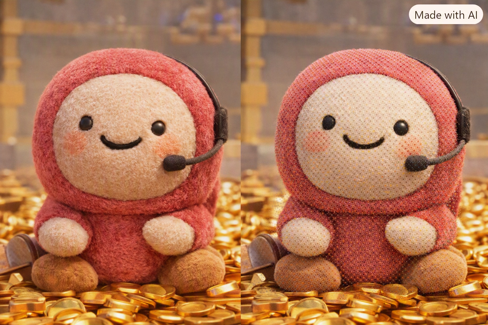

Portrait à l’honneur
Agent
Une étude de portrait qui nous invite à nous arrêter, à regarder de près et à imaginer l’histoire derrière ce visage.
Ferry Building Gallery
Section de la galerie
Découvrez les visages, les vies et les perspectives qui rendent chaque communauté artistique unique.

Portrait à l’honneur
Une étude de portrait qui nous invite à nous arrêter, à regarder de près et à imaginer l’histoire derrière ce visage.